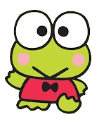

|  | Keroppi (けろけろけろっぴ, Kerokerokeroppi ) adalah karakter fiksi yang dibuat oleh Sanrio pada tahun 1988. Meskipun ia dimaksudkan untuk alam semesta Keroppi , ia dipandang sebagai karakter Hello Kitty . Keroppi tinggal di Kolam Donat. Keroppi adalah salah satu karakter terkecil. Dia adalah katak hijau dengan mata besar. Mulutnya biasanya berbentuk V ketika ditutup, namun pemandangan tertentu mungkin memberinya bentuk mulut yang berbeda, seperti lengkungan yang khas. Pakaiannya terdiri dari one-piece merah dan putih. Dia biasanya terlihat dengan bintik-bintik merah muda di pipinya. Nama keluarga Keroppi adalah Hasunoue, yang berarti "di atas teratai" dalam bahasa Jepang. Nama "Kerokerokeroppi" terdiri dari permainan kata dua lapis: yang diterjemahkan langsung dari bahasa Jepang ke bahasa Inggris sebagai "morning Glory", namun "kero" juga berarti "ribbit". Dia menikmati berenang, baseball, bermain bumerang, dan menyanyi. Dia tinggal bersama Pikki , saudara perempuannya, Koroppi , saudara laki-lakinya, ibunya (seorang ibu rumah tangga dan koki profesional), dan ayahnya (seorang dokter) di sebuah rumah di tepi Kolam Donat, di mana terdapat jembatan kayu yang menghubungkan sisi kolam. kolam dan pulau di tengahnya. |
| Informasi Lebih Lengkap Bisa Kamu Baca Disini!૮₍˶ᵔ ᵕ ᵔ˶₎ა |